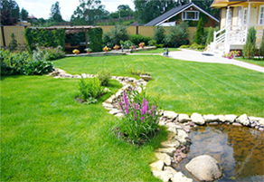

12.06.2017
Дмитрий Салаев
руководитель направления
Поливать газон необходимо после каждой стрижки, а при жаркой погоде с интервалом в несколько дней или сразу после появления первых признаков недостатка влаги. Автополив газона эффективнее настроить на вечернее время после захода солнца, для того, чтобы вода не испарялась, а впитывалась, т.к. за ночь верхний слой почвы успевает полностью пропитаться влагой. Для избегания появления ожогов полив травы в дневное время следует исключить. При недостатке влаги имеет смысл настроить автополив газона на 2 раза в день (раннее утро и вечер). На песчаных почвах полив необходимо производить не реже 1 раза в 2-3 дня, на глинистых почвах 1 раз в 5-7 дней. При поливе почва должна быть увлажнена не менее чем на 5 см в глубину.
Дмитрий Салаев
руководитель направления
Газон, выросший из семян, имеет массу преимуществ. Главное из них - стоимость посадочного материала, которая в разы меньше, чем цена готового рулона. Поставщики предлагают широкий ассортимент составов, что дает возможность получить лужайку, соответствующую требованиям покупателя. И не стоит забывать какое удовольствие приносит посев газона и уход за яркой, зеленой лужайкой садоводам-любителям.
На основании статистических данных, самый популярный способ устройства газона в мире — рулонный. Рулонный газон выращивают на специальных полотнах имеющих пористую структуру из природного или искусственного волокна или просто засевают, два-три сезона стригут и получают хорошо сформированную дернину, которую можно скручивать и укладывать.
Рулонный газон используют, когда в короткие сроки требуется получить лужайку, готовую к использованию. Использование рулонного газона менее трудоемко по сравнению с газоном, создаваемым способом посева. Рулонные газоны имеют густой травостой не позволяющий расти сорнякам, но к сожалению, со временем эта проблема появится.
Универсальный газон
Смесь трав и пропорции:
В зависимости от назначения смеси трав делят на три категории:
Профессионалы в области ландшафтного дизайна рекомендуют выбирать травяные смеси известных производителей. Такой посадочный материал соответствует нормативным требованиям, приспособлен для применения в конкретных целях. Срок годности семян - более двух лет.
Профессионалы в области ландшафтного дизайна рекомендуют выбирать травяные смеси известных производителей. Такой посадочный материал соответствует нормативным требованиям, приспособлен для применения в конкретных целях.
Газон, выросший из семян, имеет массу преимуществ. Главное из них - стоимость посадочного материала, которая в разы меньше, чем цена готового рулона. Поставщики предлагают широкий ассортимент составов, что дает возможность получить лужайку, соответствующую требованиям покупателя.
Фото посевного газона спустя 1 месяц после посадки и до первого скашивания. Обратите внимание на то, что с первого взгляда сложно отличить вариант устройства газона, бы ли это рулонный газон или посевной. Современные способы посева газона по качеству не уступают рулонному. Основное различие - это цена, посевной газон стоит дешевле.
В зависимости от назначения смеси трав делят на три категории:
Газоны устойчивые к вытаптыванию
Засеивают на площадках для занятия спортом. Посмотрите смеси трав и их пропорции
Фото посевного газона спустя 1 месяц после посадки и до первого скашивания. Обратите внимание на то, что с первого взгляда сложно отличить вариант устройства газона, бы ли это рулонный газон или посевной. Современные способы посева газона по качеству не уступают рулонному. Основное различие - это цена, посевной газон стоит дешевле.
Декоративный газон
Смесь трав и пропорции:
| Травы | Универсальный | Декоративный | Устойчивый к вытаптыванию |
|---|---|---|---|
| Овсяница красная | 25% | 25% | — |
| Райгас многоцветный | 10% | 10% | — |
| Митляк луговой | 30% | — | — |
| Райграс пастбищный | 30% | — | — |
| Кострец безостый | — | 50% | 10% |
| Тимофеевка луговая | — | 15% | 70% |
| Овсяница луговая | — | — | 20% |
Фото посевного газона спустя 1 месяц после посадки и до первого скашивания. Обратите внимание на то, что с первого взгляда сложно отличить вариант устройства газона, бы ли это рулонный газон или посевной. Современные способы посева газона по качеству не уступают рулонному. Основное различие - это цена, посевной газон стоит дешевле.
| Райграс пастбищный 25 % | Райграс пастбищный 25 % |
| Кострец безостый 20 % | Кострец безостый 20 % |
| Мятлик луговой 20% | Тимофеевка луговая 20 % |
| Тимофеевка луговая 20 % | Овсяница луговая 20% |
| Овсяница луговая 20% | Овсяница красная 15% |
| Овсяница красная 15% | Райграс многоцветковый 10% |
Фото посевного газона спустя 1 месяц после посадки и до первого скашивания. Обратите внимание на то, что с первого взгляда сложно отличить вариант устройства газона, бы ли это рулонный газон или посевной. Современные способы посева газона по качеству не уступают рулонному. Основное различие - это цена, посевной газон стоит дешевле.
На основании статистических данных, самый популярный способ устройства газона в мире — рулонный. Рулонный газон выращивают на специальных полотнах имеющих пористую структуру из природного или искусственного волокна или просто засевают, два-три сезона стригут и получают хорошо сформированную дернину, которую можно скручивать и укладывать. Рулонный газон используют, когда в короткие сроки требуется получить лужайку, готовую к использованию. Использование рулонного газона менее трудоемко по сравнению с газоном, создаваемым способом посева. Рулонные газоны имеют густой травостой не позволяющий расти сорнякам, но к сожалению, со временем эта проблема появится.
Вам необходима консультация?
Обращайтесь, и мы ответим на вопросы
Перезвоните мне
Спасибо за заявку
В ближайше время наш специалист свяжется с вами.
Мы сейчас не работаем
Если вы оставите свой номер, мы перезвоним на него.